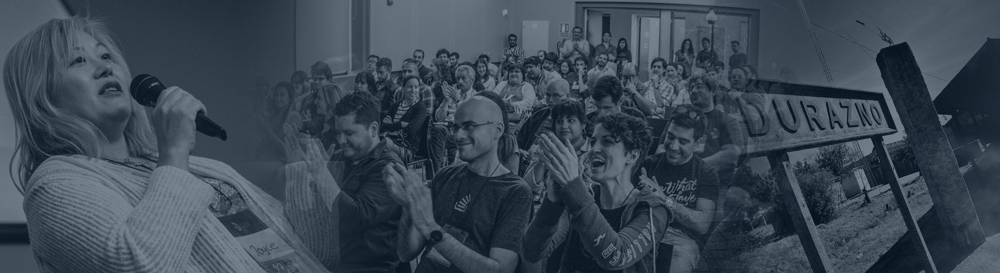

El lado humano de la programación
El lado humano de la programación
El lado humano de la programación

DuraznoConf se llevará a cabo el próximo 4 y 5 de octubre de 2018 en el Instituto Tecnológico Regional Centro-Sur (ITR CS), sede de la Universidad Tecnológica (UTEC) en Durazno, Uruguay.
Esta conferencia es una iniciativa llevada adelante por UTEC y la Intendencia de Durazno.
El objetivo es acercar ponentes de alto nivel al interior del país para que cuenten sus experiencias en el mundo de la tecnología, y así crecer juntos.
Serán dos días colmados de charlas en manos de expertos de Estados Unidos, Japón, Finlandia, México, Colombia, Chile, Argentina y Uruguay. Se tratarán temas que van desde la seguridad informática, a la detección de fake-news, pasando por música hecha con computadoras, data-science, periodismo digital y start ups, entre otros. Esto hará de la DuraznoConf un evento imperdible.
Como valor agregado el viernes 5 de octubre se realizarán talleres de Serverless con Amazon Web Services (AWS), Kubernetes, Música con Computadoras, y Emprendedurismo 101.
¡Te esperamos!
Todas las actividadesque pensamos para compartir
- Horarios a confirmar -

El cambio en el ecosistema informativo ha traído innumerables ventajas a la hora de informarse pero también tiene su lado oscuro. Las redes sociales y aún peor Whatsapp se han convertido en una máquina de viralizar informaciones falsas. ¿Cuánto daño nos hace esto? ¿Cómo lo detenemos? ¿Estamos a tiempo?

Some behind the scenes stories about Mochi Media, and other lessons I've learned while starting and selling companies, participating in open source, and teaching programming.

Presentaré un repaso sobre los inicios, avances y retrocesos del desarrollo de la Computación en la Universidad de la República, contextualizando sus inicios en el siglo pasado, basándome en documentación estudiada y entrevistas realizadas, sin olvidar algunas vivencias personales.

¿Quién dice que debemos contener nuestra curiosidad y dedicarnos a una sola cosa?

En esta charla Magdalena nos contará sobre cómo es ser emprendedor en Uruguay en empresas de Tecnología, cuáles son los desafíos y cómo superar los obstáculos y las frustraciones

Taller en el cual vamos a aprender a desarrollar aplicaciones sin servidor usando la plataforma de la nube de AWS. El taller va a cubrir todos los conocimientos necesarios para desarrollar una aplicación en la nube usando tecnologías como AWS Lambda, API Gateway, DynamoDB, SQS y otros servicios más de AWS.

Comenzaremos el taller con un repaso rápido de los conceptos base para el universo DevOps (Microservicios, Contenedores, Docker, Cluster, etc), seguimos con la introducción a Kubernetes y toda la magia que esconden sus componentes, luego revisamos los comandos mas usados, y cerramos con un despliegue online, lo mejor es ver en producción nuestro cluster!

El taller permitirá a los concurrentes conocer el entorno gráfico de programación "Pure Data" a través de la creación de un sampler -instrumento para almacenar archivos de audio y secuenciarlos, generando patrones rítmicos- y la configuración del teclado de la computadora como controlador de sonidos con altura determinada -notas que integrarán melodías-.
Es necesario que traigan sus laptops y auriculares.

¿Tenés una idea, un proyecto o ya empezaste a producir pero te sentís un poco perdido en cuanto al negocio? Vamos a estructurar tu emprendimiento para que puedas lograr tus objetivos!!
Abierto a toda persona que tenga ganas de emprender.
Quiénes compartirán charlas y talleres
Nerd del periodismo, feminista y factchecker
Montevideo, Uruguay.
Jr. Backend Wizard!
Medellin, Colombia
Me dedico a entender cómo funcionan las cosas.
Buenos Aires, Argentina.

Product Manager at SecurityScorecard
New York, EEUU.
Board member of Mission Bit
San Francisco, California, EEUU
Ingeniera Informática
Helsinki, Finlandia

Magister en Nuevas Tecnologías de la Información y de la Comunicación
Rosario, Santa Fe, Argentina.
Prof. Depto de Investigación Operativa
Montevideo, Uruguay.
Mentora #Startups y #Tecnología
San Juan, Argentina.

Software Engineer
San Francisco, CA, Estados Unidos.
Lic. en Artes Electrónicas
Buenos Aires, Argentina.

Intento que la información sea más útil, comunicativa y linda.
Santiago, Chile.

Ing. en Sistemas UTN
Buenos Aires, Argentina.
Emprendedora serial, TEDx Speaker
Montevideo, Uruguay.

Programador - curioso en general
Buenos Aires, Argentina
Los que permiten que todo suceda


Inclusión y Respeto

Nuestra conferencia se dedica a ofrecer una experiencia libre de abusos para todos, independientemente de su género, orientación sexual, discapacidad, apariencia física, talla, raza o religión. No toleramos abusos de los participantes de la conferencia en ninguna de sus formas. El lenguaje e imágenes sexuales no son apropiados para ninguna sala de la conferencia, incluyendo charlas, talleres, fiestas, Twitter y otros medios online. Los participantes de la conferencia que violen estas reglas pueden ser sancionados o expulsados de la misma sin reembolso a discreción de los organizadores.
Los abusos incluyen: comentarios ofensivos relativos a género, orientación sexual, discapacidad, apariencia física, talla, raza, religión, imágenes sexuales en espacios públicos, intimidación deliberada, acoso, persecución, fotografía o grabación de abusos, interrupciones continuadas de charlas u otros eventos, contacto físico inapropiado y atención sexual no deseada.


© Duraznoconf_02 2018.